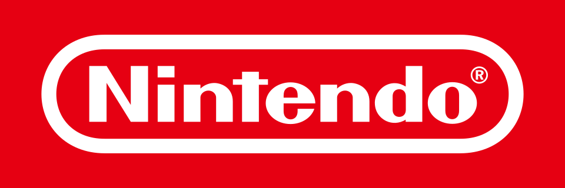
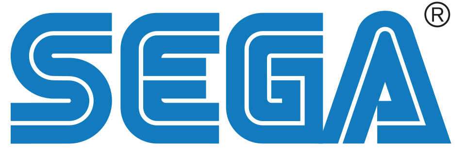
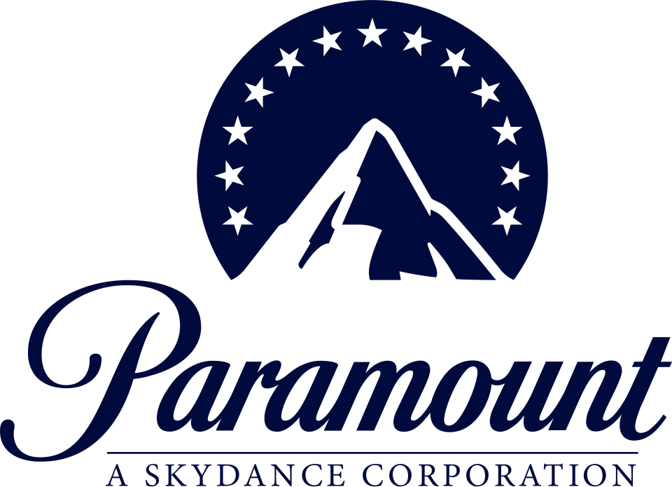
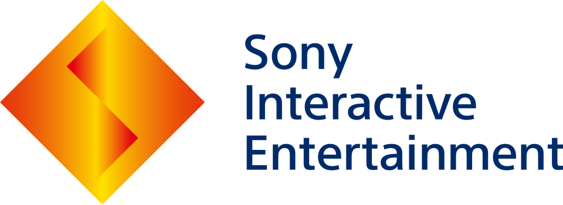

닌텐도 Nintendo
닌텐도(Nintendo)는 교토시에 본사를 둔 일본의 다국적 비디오 게임 기업이다. 비디오 게임기와 비디오 게임 소프트웨어를 함께 개발하고 제작해 출시하는 사업을 한다.
최종 업데이트

닌텐도는 어떤 브랜드인가
닌텐도는 일본 교토시에 본사를 둔 다국적 비디오 게임 기업으로, 비디오 게임기와 비디오 게임을 함께 개발하고 출시한다. 1889년 화투 제조업으로 시작해 이후 여러 사업을 거쳐 1970년대부터 비디오 게임 산업에 진출했다.
게임보이, 슈퍼 패미컴, 닌텐도 DS, Wii, 닌텐도 스위치 등 비디오 게임 산업 역사상 최고의 성적을 거둔 게임기들을 출시했다. 《마리오》, 《동키콩》, 《젤다의 전설》, 《포켓몬스터》, 《동물의 숲》 등 대형 프랜차이즈를 보유하며 국제적 마스코트 마리오를 두고 있다.
레트로 스튜디오스, 모놀리스 소프트 등 해외 지사를 소유하고 HAL 연구소, 포켓몬 컴퍼니 등과 협력한다. 2022년 기준 전세계에 비디오 게임 540억 장, 게임기 8억 대 이상을 판매했으며 가장 부유하고 가치있는 일본 기업 중 하나로 꼽힌다.
닌텐도는 어떻게 시작되고 성장했나
닌텐도는 1889년 9월 23일 공예가 야마우치 후사지로가 교토시 시모교구에 '닌텐도 카루타'라는 사명으로 설립했다. 초기에는 가내수공업 형태로 일본 전통 화투 '하나후다'를 만들어 팔았으며, 1902년 일본 최초로 서양식 트럼프 카드를 제작하고 1907년에는 이를 대량 생산하는 회사로 자리잡았다.
1949년 외조부의 병으로 21세의 야마우치 히로시가 와세다대학을 중퇴하고 3대 사장에 취임하면서 화투 외 분야로 사업을 확장하기 시작했다. 1962년 주식을 상장하고 1963년 현재의 사명인 '닌텐도 주식회사'로 변경했으며, 1970년대부터 비디오 게임 산업에 진출했다.
닌텐도의 브랜드 아이덴티티는 무엇인가
화투 제조업에서 출발해 하드웨어와 소프트웨어를 함께 개발하는 비디오 게임 기업으로 성장했으며, 마리오 등 자체 캐릭터 IP와 국제적 마스코트를 보유한 점이 특징이다.
닌텐도의 대표 제품과 서비스는 무엇인가
닌텐도는 하드웨어와 소프트웨어 개발을 함께 하는 사업을 한다. 게임보이, 슈퍼 패미컴, 닌텐도 64, 닌텐도 DS, Wii, 닌텐도 3DS, 닌텐도 스위치 등의 비디오 게임기를 출시했으며, 《마리오》, 《동키콩》, 《젤다의 전설》, 《포켓몬스터》, 《동물의 숲》, 《별의 커비》, 《메트로이드》, 《슈퍼 스매시 브라더스》, 《스플래툰》 등의 프랜차이즈를 전개한다.
크리처스, 게임 프리크와 함께 합자회사 포켓몬 컴퍼니를 설립해 《포켓몬스터》 브랜드를 관리하며, HAL 연구소와는 워프스타 유한회사를 세워 애니메이션 《별의 커비》 등을 제작했다. 2015년에는 스마트폰 게임 사업에 진출해 2016년 《포켓몬 고》를 출시했다.
레트로 스튜디오스, 넥스트 레벨 게임스, 모놀리스 소프트 등의 자회사를 통해 소프트웨어 개발도 진행한다.
닌텐도는 지금 어떤 상태인가
닌텐도는 2019년 3월 기준 종업원 수 5,944명 규모이며 총 26개의 자회사를 보유하고 있다. 2019년 12월에는 중국의 텐센트와의 계약을 통해 닌텐도 스위치를 중국에 정식 출시한다고 발표했다.
닌텐도는 가장 부유하고 가치있는 일본 기업 순위의 최상위에 속한다.
닌텐도 로고는 어떻게 변해왔나
자주 묻는 질문
닌텐도는 어느 나라 브랜드인가요?
닌텐도는 일본의 미디어·엔터테인먼트 브랜드입니다.
닌텐도는 언제 설립되었나요?
닌텐도는 1889년 설립되었습니다.
닌텐도의 브랜드 아이덴티티는 무엇인가요?
화투 제조업에서 출발해 하드웨어와 소프트웨어를 함께 개발하는 비디오 게임 기업으로 성장했으며, 마리오 등 자체 캐릭터 IP와 국제적 마스코트를 보유한 점이 특징이다.
닌텐도의 대표 제품은 무엇인가요?
닌텐도는 하드웨어와 소프트웨어 개발을 함께 하는 사업을 한다.
닌텐도는 현재 어떤 상태인가요?
닌텐도는 2019년 3월 기준 종업원 수 5,944명 규모이며 총 26개의 자회사를 보유하고 있다.
닌텐도의 창업자는 누구인가요?
닌텐도의 창업자는 야마우치 후사지로입니다(위키데이터 기준).
닌텐도의 본사는 어디에 있나요?
닌텐도의 본사는 교토시에 있습니다(위키데이터 기준).
출처와 검증
닌텐도 관련 참고: 공식 웹사이트 · 위키데이터 Q8093 · 한국어 위키백과 · 영어 위키백과. 브랜드명은 한글과 원어를 함께 표기하되 데이터에 없는 표기는 만들지 않습니다. 기원 국가·설립연도는 검수된 정의문에서 확인된 값을 우선하고, 없을 때만 공식 웹사이트 URL이 일치하는 위키데이터 개체의 값을 씁니다. 위키데이터 값은 2026-09-26 기준입니다.
브랜드 연대기에서 보기
함께 읽을 브랜드
 월트 디즈니 컴퍼니The Walt Disney Company미디어·엔터테인먼트
월트 디즈니 컴퍼니The Walt Disney Company미디어·엔터테인먼트 워너 브라더스Warner Bros. Entertainment미디어·엔터테인먼트캡콤Capcom미디어·엔터테인먼트소니 픽처스 엔터테인먼트Sony Pictures미디어·엔터테인먼트코나미Konami미디어·엔터테인먼트
워너 브라더스Warner Bros. Entertainment미디어·엔터테인먼트캡콤Capcom미디어·엔터테인먼트소니 픽처스 엔터테인먼트Sony Pictures미디어·엔터테인먼트코나미Konami미디어·엔터테인먼트
세가Sega미디어·엔터테인먼트
파라마운트 스카이댄스Paramount Skydance미디어·엔터테인먼트
소니 인터랙티브 엔터테인먼트Sony Interactive Entertainment미디어·엔터테인먼트